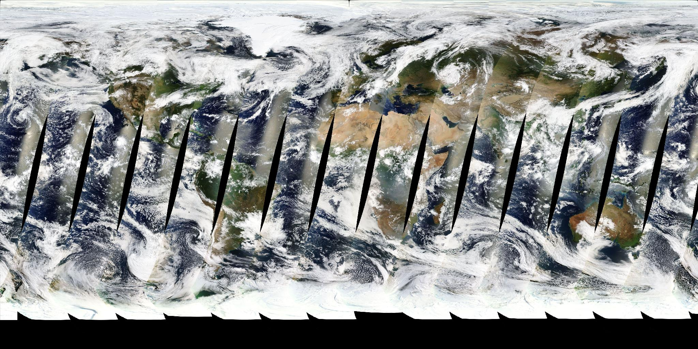
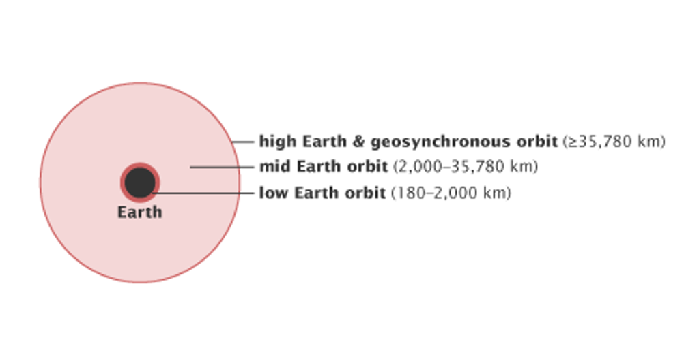
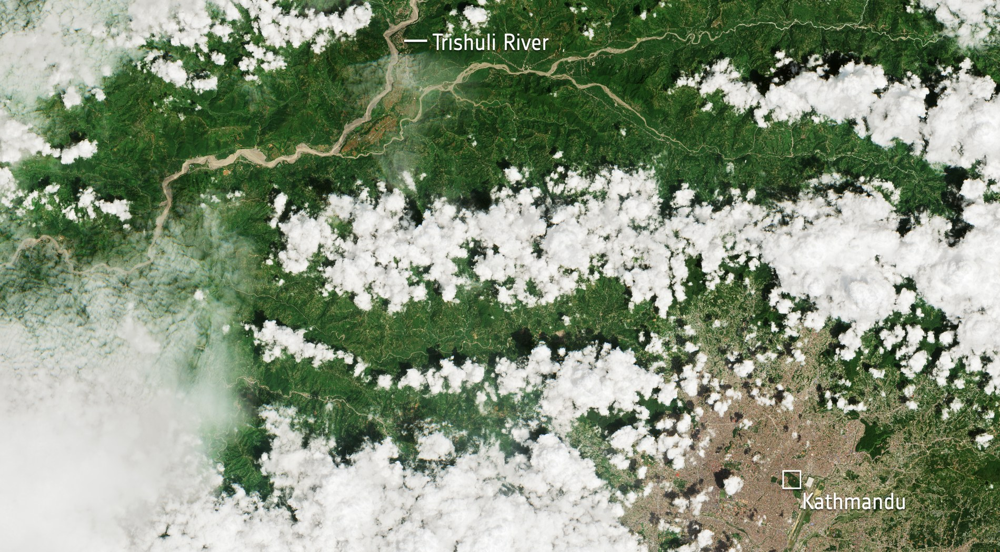
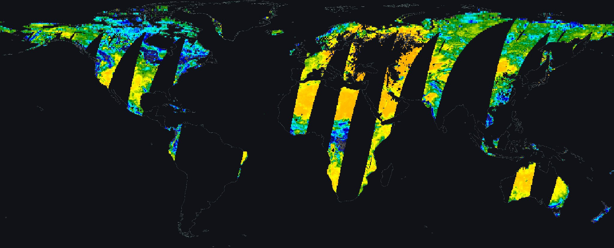
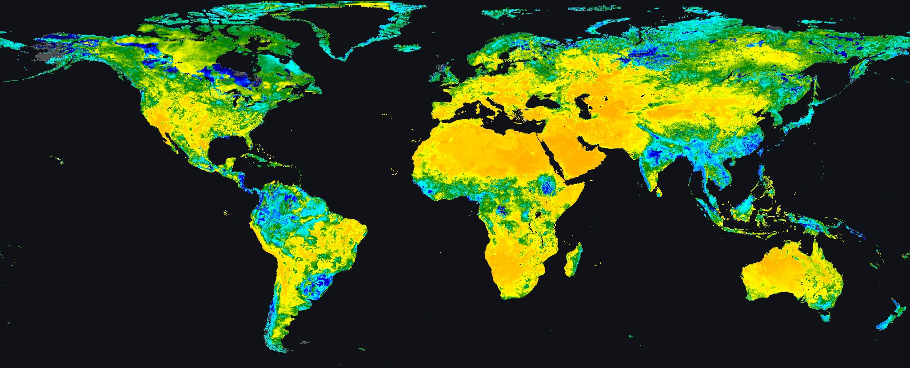
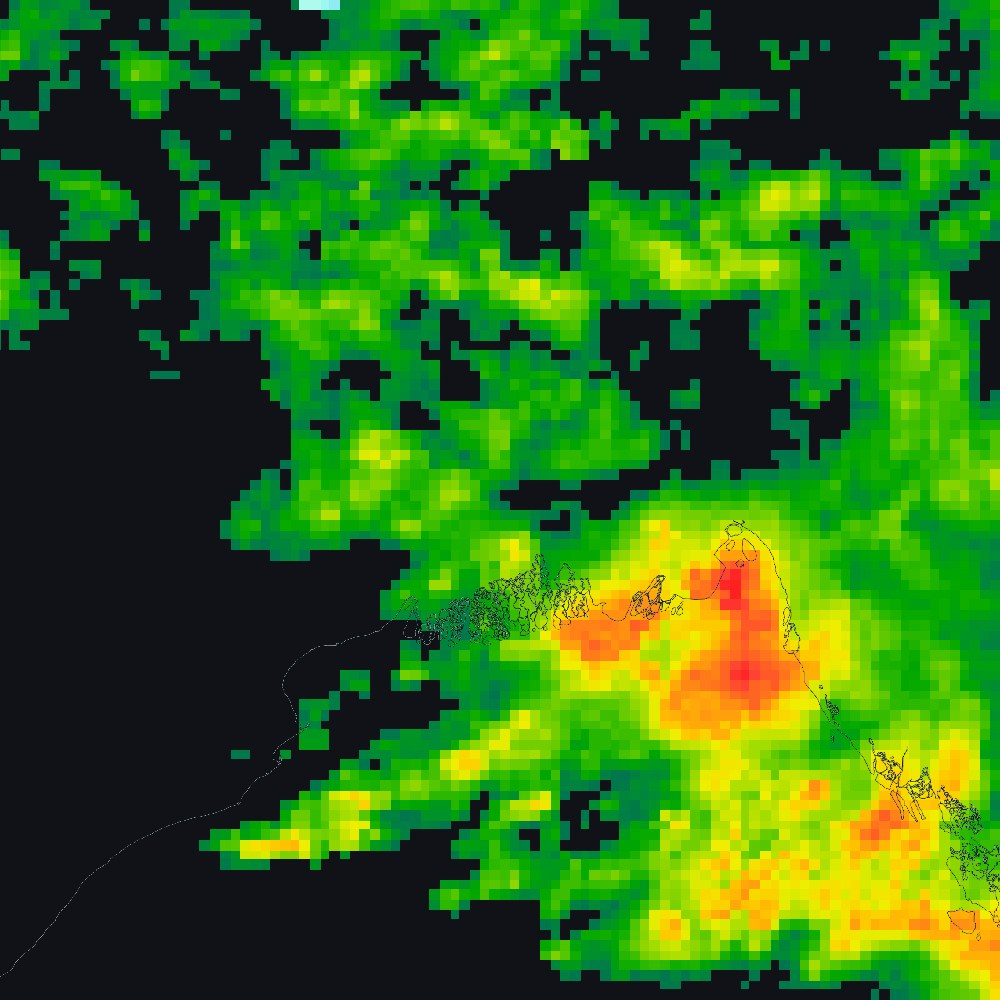
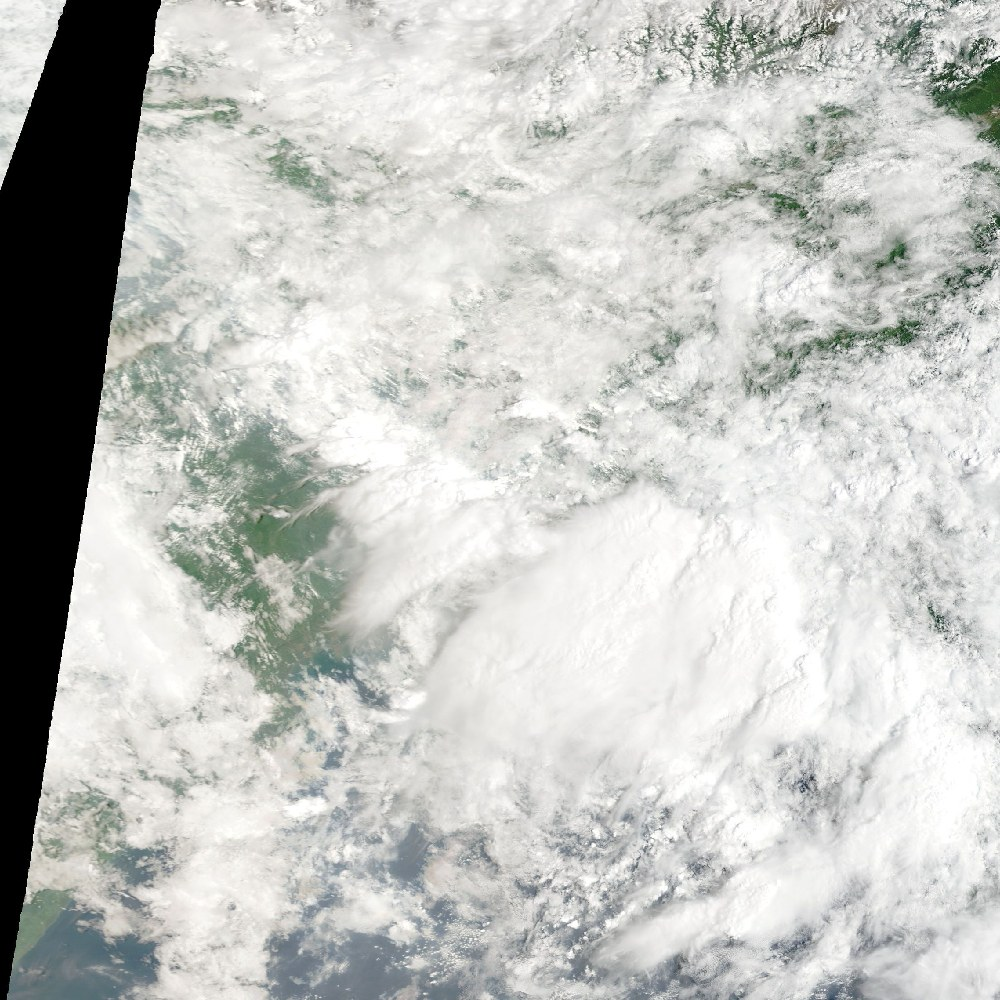
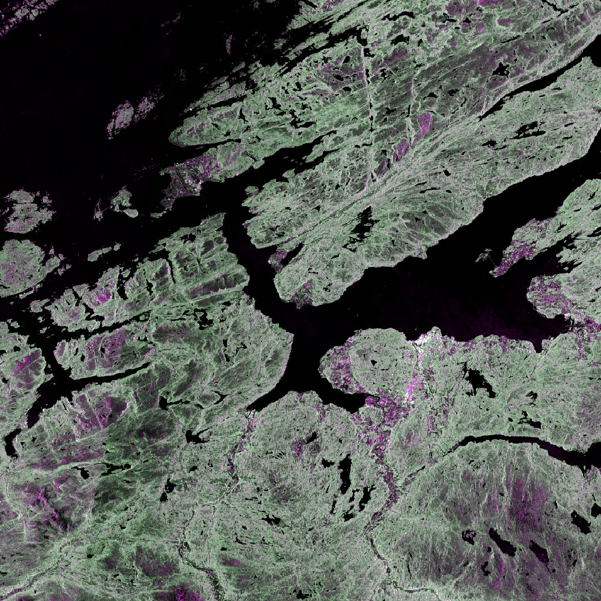
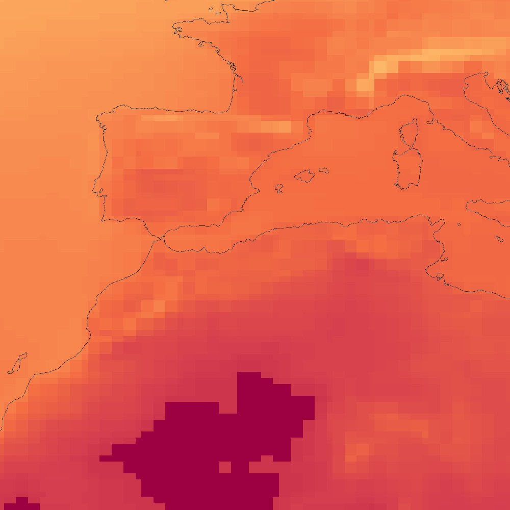

A glacier collapsed here on 26 August. You can see the flood only because two satellites passed in bands that cut through cloud — today is about reaching data like this.
Deep Learning Applications in Environmental Big Data · Prof. Hyunglok Kim · GISTImage: Langtang Lirung collapse & Trishuli flash flood, Nepal, 26 Aug 2026 — Landsat-9 shortwave-infrared. Contains modified Copernicus Sentinel data (2026) and Landsat-9 data, processed by ESA (CC BY 4.0)
0:00 · Reading quiz
Quiz first — 5 minutes, closed book
5 questions on this week’s paper (Rolf et al. 2024).
No AI, no notes.
Swap with your neighbor to grade.
Pass = 3 of 5.
Best 8 of 10 count, 0.75% each — an optional handwritten book summary forgives one wrong answer.
Week 3 · 55 min
Today in five blocks + journal club
1 · The data zoo (10) — how much model is in a product, and why reanalysis is not observation.
3 · ERA5 as a pretraining corpus (14 · the headline) — equiangular grids, the cos φ weighted mean derived on the board, anomalies, regridding.
4 · Dataset objects (8) — chips vs tiles vs time series; normalization and quality-assurance masking done right.
5 · Reading framing + lab briefing (5 + 5 flex) — the position in one slide, the five-differences board exercise (FLEX), the two ETL (extract-transform-load) pipes.
Journal club (30 · after break) — the three discussion questions from your entrance tickets; the drawn leader moderates.
Skills this week: cloud-native data pipelines · ERA5 handling · cos-lat weighting · regridding · dataset/normalization designEvery product table, reference card and derivation still ships in this deck — see the Appendix after the lab slide
Part 1 · 10 min
The Data Zoo
Part 1 · The corpus is the prior
The corpus is the prior
A pretrained model can only know what its corpus sampled: coverage, cadence, spectral content, and error character become the model's inductive prior.
Prithvi saw HLS over the US → global transfer is an open question; Prithvi-WxC saw 160 MERRA-2 variables → it inherits MERRA-2's biases.
Every headline weather model — FourCastNet, Pangu, GraphCast, GenCast — is an ERA5 emulator first.
So "which dataset?" is a modeling decision, not a logistics one.
corpus — the pile of data a model was pretrained on; whatever the corpus never sampled, the model has no feel for.inductive prior — the assumptions a model brings before it sees your data; here you do not choose them, you inherit them from the corpus.HLS — Harmonized Landsat & Sentinel-2, 30 m optical, US-heavy; MERRA-2 — NASA's global atmospheric reanalysis. Prithvi ate the first, Prithvi-WxC the second.emulator — a model trained to reproduce another model's output: an ERA5-trained forecaster has never seen a raw observation. Returns in W11.in the figure — one panel per axis: where it looked, how often, which wavelengths (VIS visible, NIR near-infrared, SWIR shortwave infrared), and how it fails. Orange marks what the corpus recorded; everything unmarked is what the model will never feel.
Jakubik et al. 2023 (Prithvi) · Schmude et al. 2024 (Prithvi-WxC) · Rasp et al. 2024 (WeatherBench 2)
Part 1 · The four axes, for real
Where it looked, and how often it comes back

COVERAGE — one day of MODIS/Terra. The black wedges are ground nobody looked at that day.

CADENCE — altitude decides revisit: LEO 180–2,000 km · MEO to 35,780 km · GEO above that.
swath — the strip a sensor sees on one pass. MODIS’s is ~2,330 km wide, but consecutive equatorial ground tracks sit further apart than that, so the wedges between them are genuinely unobserved.in the left figure — this “global” image is a mosaic of about fifteen passes. Toward the poles the strips overlap and the seams vanish; at the equator they do not meet.in the right figure — rings are altitude, not orbit shape. LEO/MEO/GEO are low, medium and geostationary Earth orbit. GEO circles once a day, so it hangs over one hemisphere and images it every ten minutes; LEO circles every 90–120 min but sees only the strip below, so the same ground waits days.
SPECTRAL — the Landsat 8/9 OLI/TIRS row keeps eleven blocks — that is its whole spectral world.

ERROR — Sentinel-2 the day after the Nepal flood: cloud sits on exactly the valley you need.
atmospheric window — the pale shape behind the Landsat bands is how much light the air lets through at each wavelength. Bands are placed in the peaks; the valleys are where water vapour absorbs, so no sensor bothers.in the left figure — one row per sensor, wavelength along the bottom, block width = the band’s span; OLI/TIRS = Landsat 8/9’s Operational Land Imager + Thermal Infrared Sensor. Numbers on the right are ground resolution in metres.structured missingness — the right figure is why we say cloud is not noise: it is opaque, it has shape, and it correlates with the storm you are trying to measure. This is the argument for radar, and for W4.
USGS, Comparison of Landsat Spectral Bands, May 2026, public domain · Nepal scene: contains modified Copernicus Sentinel data (2026), processed by ESA — CC BY-SA 3.0 IGO
Part 1 · Processing level
Processing level = how much model is in the product
SMAP L3: a retrieval — gaps where the satellite didn't pass, flags where retrieval fails.
SMAP L4: gap-free, 3-hourly, root-zone — because a land-surface model fills the space between overpasses.
Gap-free is not free: you are training on model physics wherever there was no overpass.
L1 / L2 / L3 / L4 — the ladder of how much model sits between the instrument and your download: L1 calibrated signal, L2 a retrieved variable, L3 that variable on a grid, L4 a model filling the gaps.radiance, brightness temperature — what the sensor truly senses: energy arriving at the antenna, quoted as the temperature a perfect emitter would need to send it. L1 stops here.swath vs gridded — L2 lives on the satellite's own footprint track, a curved ribbon with gaps between orbits; L3 resamples those ribbons onto a regular lat-lon grid.GSD “ground sample distance” — the ground width of one pixel: 10 m for Sentinel-2 against 36 km for SMAP L3, four orders of magnitude inside one zoo.gap-free is model-filled — SMAP L4 runs a land-surface model between overpasses, so a pixel can look like data and be pure physics.
Same day, same variable — one is measured, one is modelled

L3 · SPL3SMP, 36 km — a retrieval. Black is ground no overpass reached, or where the retrieval was rejected.

L4 · SPL4SMGP, 9 km — the same day, after a land-surface model carries earlier observations across the gaps.
3 September 2026: L3 reports over 43% of the area L4 reports — same variable, same day, same satellite.
why L3 has holes — two causes at once: SMAP’s swath leaves wedges between consecutive orbits, and pixels whose retrieval fails quality control are dropped. Neither hole is random.what fills L4 — not invention: the Catchment land model is driven by weather forcing and nudged by SMAP brightness temperatures through an ensemble Kalman filter, so gap pixels are earlier observations propagated forward in time.the trade — train on L3 and your model learns where observations exist; train on L4 and it learns a land model’s physics wherever the satellite was absent. 43% measured is the honest number to remember.
SMAP L3 SPL3SMP and L4 SPL4SMGP, 3 Sep 2026, rendered from NASA Worldview / GIBS — public domainCoverage measured on these two images, cos-latitude weighted
Part 1 · Reanalysis ≠ observation
Reanalysis ≠ observation ≠ analysis
Observation — what an instrument measured: irregular, gappy, instrument error.
Analysis — best estimate of the current state: observations assimilated into a forecast model; the operational system keeps changing.
Reanalysis — decades of analyses recomputed with one frozen model + DA (data assimilation) system.
Consistent physics ≠ consistent accuracy: the observing system underneath still changes (satellite era ≫ pre-1979).
4D-Var “four-dee-var” — four-dimensional variational assimilation: bend one model trajectory over a 12-hour window until it passes as close as it can to every observation in that window.first guess, background — the short forecast you start the window from, before any observation is read; the figure calls it the prior forecast.analysis increment — the correction the observations add to that first guess; first guess plus increment is the analysis.consistent physics ≠ consistent accuracy — the model is frozen for 80 years, but the observing system underneath is not. Before 1979 there were almost no satellite soundings, so ERA5 is far weaker then — part of any long trend can be the network improving, not the climate.in the figure — read it as a loop: the prior forecast (left) and the observations (right) both feed the accent-coloured 4D-Var box; its output seeds the next 12 h forecast, and the dashed arrow returns it as the next prior.
Hersbach et al. 2020, QJRMS (ERA5) · ERA5T preliminary stream runs ~5 days behind real timeFull derivation: Amos Lawless, ESA EO Summer School (56 min)
Part 1 · Error character
Error character: every product has a personality
IMERG Early (4 h) → Late (14 h) → Final (~3.5 mo, gauge-corrected): pick freshness or quality — never train on Final and deploy on Early without testing the gap.
Optical (MODIS, Sentinel-2, HLS): clouds are structured missingness — correlated with rain, i.e. with the events you care about.
SAR (Sentinel-1): all-weather but speckled; backscatter lives in dB (log) space.
Reanalysis: smooth and gap-free by construction — variance is too low, extremes are damped.
latency — how long after the satellite flew you can actually open the file: IMERG Early 4 hours, Final about 3.5 months.structured missingness — data absent for a reason that correlates with your target: clouds hide exactly the rainy days a flood model needs. Returns in W4 lab.SAR — synthetic aperture radar; speckle — the salt-and-pepper grain in SAR images: radar waves bouncing inside one pixel interfere with each other. It is physics, not sensor noise.dB “decibels” — SAR backscatter is stored on a log scale, so −20 dB is ten times weaker than −10 dB; do the statistics in dB, never in linear power.
Error structure is rarely i.i.d. (independent and identically distributed) — it correlates with the phenomena being predicted
Part 1 · Error character
Four personalities, four real scenes

IMERG · precipitation Coarse 0.1° cells, and a latency ladder: 4 h, 14 h, or 3.5 months.

OPTICAL · MODIS Same place, same day. The ground is simply gone under cloud.

SAR · Sentinel-1 All-weather, but grainy. Black is smooth water, bright is built-up.

REANALYSIS · MERRA-2 No gaps anywhere — and no texture either. Every pixel is model output.
in the first two figures — the same corner of the Bay of Bengal on the same day. IMERG says it is raining hard over the delta; the optical scene of those same hours shows only cloud. That is structured missingness in one picture: the sensor loses exactly the days you needed.why SAR looks grainy — speckle: radar wavelets scattered inside one pixel interfere with each other. Water is black because it mirrors the pulse away from the satellite; cities are bright because corners bounce it straight back.why reanalysis looks smooth — a model produced every pixel, so the field is continuous by construction. Gap-free and low-variance are the same property seen twice, and it is why extremes come out damped.
IMERG and MODIS/Terra 3 Sep 2026 · Sentinel-1 OPERA RTC (radiometric terrain corrected) 20 May 2025 · MERRA-2 monthly Jun 2026 — from NASA Worldview / GIBS, public domainClick any panel to enlarge
Part 1 · Watch at home
The two corpora on the last slide, in their own words
Prithvi — the NASA/IBM geospatial foundation model family; Prithvi-EO (EO = Earth observation) ate HLS imagery, Prithvi-WxC ate 160 MERRA-2 variables. Two corpora, two very different priors.MERRA-3 — the successor now in production at NASA’s Global Modeling and Assimilation Office (GMAO); when it lands, every model pretrained on MERRA-2 inherits a prior from a superseded reanalysis.in the thumbnails — left and middle, the optical-imagery side of the zoo; right, the reanalysis side. Slide 5’s claim is that choosing between them is a modelling decision.
first guess — the short-range forecast the assimilation starts from, before any observation is used; the correction applied to it is the analysis increment.reanalysis vs analysis — same machinery, different intent: an analysis runs once, in real time; a reanalysis re-runs decades with one frozen model so the record is consistent end to end.in the thumbnails — scattered observation points over a globe; the forecast-observe-correct loop; a radar pulse and its echo; and observations arriving along a time axis. Four views of one question: where did this number come from?
None of these is the assigned video — the assigned one (ERA5 and ERA6, 15 min) is in the Appendix and its summary is due with Note 03
Part 2 · 10 min
Cloud-Native Geospatial
Part 2 · The death of download
Download-then-process is dead
ERA5 at 0.25°/hourly is petabyte-scale; the Sentinel-2 archive is tens of PB — no one downloads the corpus anymore.
Cloud-native flips the model: data sits in object storage (S3 or GCS — Google Cloud Storage); you issue HTTP (HyperText Transfer Protocol) range requests for exactly the bytes you need.
Three specs make that possible: COG (Cloud Optimized GeoTIFF — images), Zarr (N-dimensional arrays), STAC (SpatioTemporal Asset Catalog — search).
object storage — not a disk and not a file server: a flat pool of named objects (S3, GCS) you address by key over HTTP, which is why a thousand workers can read it at once.HTTP range request — one line in the request header saying “send me bytes 4096–8191”; you get a slice of a 4 GB file without ever downloading the file.useful bytes ÷ bytes moved — what your model actually consumed, divided by what crossed the network; the chunking slide two ahead puts real numbers on this ratio.COG · Zarr · STAC — images, N-D arrays, search: three specs, one pipeline, not three rivals.
Part 2 · Zarr
Zarr — chunked N-D arrays in object storage
An N-D array cut into chunks; each chunk is one compressed object; JSON (JavaScript Object Notation) metadata describes shape, dtype, chunking, compression.
Chunks are addressed by index (t.0.3.7) → massively parallel reads, no file server.
xarray.open_zarr maps it to labeled dims/coords; consolidated metadata = one round-trip to open a PB-scale store.
Zarr is to arrays what COG is to images — and it is how ERA5 is served for ML (machine learning).
chunk — the block the array is cut into, and the smallest thing a reader can fetch; ask for one value and you still pay for the whole chunk it lives in.t.0.3.7 — a chunk’s name is just its index along each dimension, so any worker can compute the key it wants and fetch it directly — nothing in the middle to ask.consolidated metadata — every array’s shape, dtype and chunking gathered into one JSON document, so opening a petabyte store costs one round-trip instead of thousands.dims and coords — xarray’s labels: you slice by level=500 and a date, not by integer positions you have to remember.
zarr-python · xarray · gcsfs/s3fs for the storage layer
Part 2 · STAC
STAC — the search index over it all
SpatioTemporal Asset Catalog: an Item = one scene — geometry, datetime, properties, and assets (links to the actual COGs); Items group into Collections.
The STAC API answers: bbox + datetime + property filters (e.g. eo:cloud_cover < 20) → a list of Items.
pystac-client searches; stackstac/odc-stac turn the result into a lazy xarray datacube.
STAC finds the scenes; COG serves the pixels; Zarr holds what you keep.
Item — one scene at one moment: its footprint, its timestamp, its cloud cover. A record card, not the pixels.asset — a link on that card to a real file — one per band, each a COG sitting in object storage.Collection — every Item of one product, e.g. all Sentinel-2 L2A scenes ever made; it is the name you put in the search.eo:cloud_cover < 20 — a filter on the Item’s properties, answered by the STAC API (Application Programming Interface) before a pixel is touched.lazy datacube — stackstac hands back an xarray shaped like the answer; nothing is read until you slice it.
Earth Search (Element 84) on AWS (Amazon Web Services): Sentinel-2 L2A · Copernicus Data Space and NASA CMR (Common Metadata Repository) also speak STAC
Part 2 · The chunk map
Chunk layout dominates throughput
Cost of a read = chunks touched × chunk size — the store decompresses whole chunks, never single values.
Layout A is perfect for "one global map" and catastrophic for time series; layout B is the mirror image.
Rule: chunk so your dominant access pattern — for training, the sample shape — touches few chunks.
in the figure — one datacube drawn twice: time runs left to right, all of space is squashed onto the vertical axis, and each outlined box is one chunk.the accent stripe — the query itself: one pixel, all times. The shaded chunks are what the store must fetch and decompress to answer it — all eight on the left, exactly one on the right.chunks touched × chunk size — you pay per chunk, never per value; so chunk along your dominant access pattern — for training, the sample shape — and it is fixed at write time.
Both are lazy: nothing moves until you slice and .compute() — the chunk map then decides how fast that is.
token: "anon" — read the bucket with no credentials at all; the WeatherBench2 ERA5 store is public, so there is no account, no key, no download.predicate push-down — the cloud-cover test travels into the search, so the catalogue throws the cloudy scenes away for you instead of you fetching them to check.lazy — both objects are promises: shapes and coordinates are known, no pixel has moved. .compute() is the moment the chunk map starts charging you.
Part 2 · Watch at home
The cloud-native stack, explained by the people who built it
codec pipeline — the ordered filters and compressor a chunk passes through on write and back through on read; stored in the metadata so any reader can reverse it.interoperable — the point of the standards: your reader does not need to know who wrote the archive, only that it is STAC, COG or Zarr.in the thumbnails — left, the conference talk that names the whole stack at once; right, the Zarr spec from one of its maintainers.
Both are conference talks, both free — watch the first if you want the map, the second if you want the format
Part 3 · 14 min · the headline
ERA5 as a Pretraining Corpus
Part 3 · The grid lies
The equiangular grid oversamples the poles
0.25° equiangular lat–lon grid → a 721 × 1440 array; every row has 1440 cells, and the first and last rows sit exactly on the poles.
But physical cell width shrinks with latitude: area ∝ cos φ.
cos 0° = 1 vs cos 89.75° ≈ 0.0044 → an equator cell covers ~229× the area of the last full row before the pole.
Surface fields (T2m, U10/V10, MSLP — mean sea-level pressure) plus 13 pressure levels, 50 → 1000 hPa. Z500 — geopotential at 500 hPa — is the headline field, and lab pipe (a) computes its climatology.
The array is a lie about the sphere — any unweighted mean over it inherits the lie.
φ “phi” — latitude, 0° at the equator and ±90° at the poles; λ “lambda” is longitude.equiangular — every cell spans the same number of degrees, never the same number of kilometres.∝ cos φ “proportional to cosine phi” — a cell’s true area is the equator cell’s area times cos φ, shrinking to nothing at the pole.Z500 / hPa — geopotential at the 500 hPa (“hecto-pascal”) pressure level, about 5.5 km up; the field W9–W11 are scored on.in the figure — every box is one grid cell at its true relative width; all four rows carry 8 cells of identical Δφ × Δλ — the fixed span in latitude and longitude — yet the highlighted 80° row is a sliver.
Part 3 · The weight, derived
Deriving the cos-latitude weighted mean
Area element on a sphere: dA = R² · cos φ · dφ · dλ — the cos φ is the shrinking circumference of a latitude circle.
For a grid cell at latitude φᵢ with fixed Δφ, Δλ: Aᵢ ≈ R² · cos φᵢ · Δφ · Δλ → everything cancels but wᵢ = cos φᵢ.
Area-true global mean of a field xᵢⱼ (i = lat row, j = lon column):
⟨x⟩ = Σᵢ Σⱼ cos φᵢ · xᵢⱼ / ( Nλ · Σᵢ cos φᵢ )
One line of code: ds.weighted(np.cos(np.deg2rad(ds.lat))).mean(("lat","lon")) — but now you know why.
Same weight sits inside WB2's headline metric, latitude-weighted RMSE — and inside ACC (W11).
dA = R² cos φ dφ dλ — the area of a tiny patch of sphere: R is Earth’s radius, and each “d” means an infinitesimally small step.wi “w sub i” — the weight carried by every cell in latitude row i; R², Δφ and Δλ are identical for all cells, so they cancel and only cos φi survives.Σ “sigma” — add up; ΣiΣj sweeps every latitude row i and longitude column j, and the denominator only rescales the weights to sum to one.Δ(sin φ) “delta sine phi” — the exact row weight; on a uniform-Δφ grid it is cos φi times one constant shared by every row, so it cancels in a normalized mean (Appendix A7).RMSE · ACC · WB2 — root-mean-square error and anomaly correlation coefficient, the two scores WeatherBench2 (WB2) ranks models on.
Exact per-row weight uses Δ(sin φ) across cell edges; cos φᵢ is its midpoint approximation — fine at 0.25°
Part 3 · Anomalies
Anomalies: subtract the boring part
Climatology c = the expected state for this location, day-of-year, hour — averaged over a fixed reference period (WB2: 1990–2019).
Anomaly: x′ = x − c — what remains is weather, after the seasonal and diurnal cycles are removed.
Why it matters: predicting "warm in August" is free skill; anomaly metrics refuse to pay for it.
Sets up W11: ACC = Σ w·x′f·x′o / √(Σ w·x′f² · Σ w·x′o²) — the anomaly correlation coefficient, with the same cos φ weights; ACC ≈ 0.6 is the classic "useful forecast" line.
c — the climatology: the normal state for this place, this day of the year, this hour, averaged over a fixed block of years (WB2 uses 1990–2019).x′ “x prime” — the anomaly: today’s value minus what is normal here, so what is left over is the weather and not the season.ACC — anomaly correlation coefficient: how well the forecast anomaly lines up with the observed one, with the same cos φ weights. Derived in W11.x′f, x′o — forecast anomaly and observed anomaly; the square root underneath just rescales the score to sit between −1 and 1.
Categorical fields — land cover, SCL (scene classification layer) — nearest-neighbor only: you cannot average class 4 and class 6. Tools: xesmf/ESMF.
remapping — the other word for regridding; the tool almost everyone uses is xESMF, a Python wrapper around ESMF, the Earth System Modeling Framework.bilinear “bi-linear” — blend the four surrounding grid nodes by distance, straight-line in each direction; you get a point value, not an amount.conservative — each new cell is the area-weighted average of the old cells it overlaps, using the same cos φ areas we just derived, so the map total is unchanged.intensive — a per-point quantity that does not add up when cells merge (T, Z, wind); a flux or amount per area, like rainfall, does add up and must be conserved.nearest-neighbor — copy the closest cell’s value and never average; the only legal choice for class labels, where “4.5” means nothing.5.625° — the coarse WeatherBench2 grid the lab reads; it was coarsened from 0.25° ERA5 conservatively, so you are already living with this choice.
AIFS (Artificial Intelligence Forecasting System) · GraphCast · GenCast — the current machine-learning forecast models; all three are scored against ERA5, so every number they report carries today’s weight inside it.layer swipe — the before/after slider in the second video; the honest way to show change, because both scenes stay visible and the viewer moves the boundary.in the thumbnails — left, the evaluation side of this course (returns in W9–W11); right, the acquisition side, on the flood from slide 1.
Second video uses open imagery from Vantor, Planet and OpenAerialMap — a different corner of the zoo from the one the lab uses
Part 4 · 8 min
Dataset Objects for Pretraining
Part 4 · What is a sample
What is a training sample? Chips, tiles, pixel series
The choice couples to architecture: masked-autoencoder Vision Transformers eat chips (SatMAE 224², Prithvi); Presto (about 400 thousand parameters) and TESSERA eat pixel series; tiles are for delivery and inference tiling, never for batching.
tile — the granule the agency ships you; for Sentinel-2 that is a 110 km MGRS (Military Grid Reference System) square, about 10,980 pixels on a side at 10 m.chip — the small window your dataloader actually yields, cut out of a tile: 64 by 64 pixels × bands, sometimes × dates.pixel time series — throw the neighbours away, keep one location through time: a T × C sequence, which is what Presto and TESSERA eat.in the figure — left, one tile with the accent square marking where a chip is cut; middle, a stack of chips (bands or dates); right, one pixel followed across t₁ t₂ t₃ into the plotted curve.
Cong et al. 2022 (SatMAE) · Tseng et al. 2023 (Presto) · lab chips: 64×64 × 4 bands
Part 4 · Statistics are parameters
Normalization statistics are model parameters
Per-band μ and σ — band B02 and band B08 live on different scales; SAR is already log (dB); one global μ/σ across bands destroys spectral structure.
Train-set-only: stats computed over test years/regions are leakage — the W2 lesson, now in the corpus itself.
Compute once, streaming (Welford / chunked accumulation), and version the stats file with the corpus — fine-tuning must reuse pretraining stats, not recompute.
Per-chip min–max normalization erases absolute brightness — a real signal (albedo, backscatter level), not noise.
μ, σ "mu, sigma" — a band's average value and how much it varies; standardization subtracts μ and divides by σ so every band arrives near zero with spread one.per-band — one μ and one σ for each band on its own; blue and near-infrared live on different scales, so a single pair for all bands flattens the spectrum.train-only — compute the stats over training years and regions alone; folding in test data leaks the answer, the W2 lesson moved into the corpus itself.Welford — a streaming formula that updates a mean and a variance chunk by chunk, so you never hold the whole corpus in memory.
Prithvi and SatMAE ship fixed per-band stats with their weights — reusing the backbone means reusing the stats
Part 4 · The QA mask
Quality-assurance masking: the curation every foundation-model corpus lives on
Chip rule in today's lab: keep a chip only if its bad-SCL fraction is below a threshold (e.g. < 5–10%).
SMAP: use retrieval_qual_flag (bit 0 = recommended) and surface flags — frozen ground, RFI, dense vegetation, open water.
Skipping this step doesn't crash — it just pretrains your model on clouds. Corpus papers bury it in appendices; it is half the work.
L2A — the Sentinel-2 product already corrected to surface reflectance; L2A is the level that ships the SCL band, L1C does not.SCL "scene classification layer" — a 20 m label image delivered beside the bands that tags each pixel cloud, shadow, water, vegetation and so on, numbered 0 to 11.bad-fraction threshold — count the rejected pixels in a candidate chip, divide by the total, and keep the chip only if that fraction falls under your cut-off.RFI "radio-frequency interference" — ground transmitters shouting in SMAP's microwave band; the quality flag marks those retrievals as untrustworthy.
Choose from the zoo — knowing what's measured vs modeled, at what resolution, latency, error character.
Reach it cloud-natively — STAC to find, COG/Zarr to read only the bytes you need, chunking to make it fast.
Shape it — grid geometry (cos φ), anomalies vs climatology, the right regridding.
Curate it — chips with quality-assurance masking and versioned, train-only, per-band stats.
Every foundation-model paper's "Data" section is these four verbs. Most of the effort — and many of the bugs — live here.
cos φ "cosine phi" — the latitude weight from Part 3: cells shrink toward the poles, so each one's share of a global mean is scaled by the cosine of its latitude.STAC, COG, Zarr — the three names from Part 2 in one line: STAC finds the scene, COG and Zarr let you read only the bytes you asked for.the four verbs — choose, reach, shape, curate; read them as the section headings of the Data section of any foundation-model paper.
Part 5 · Reading: Rolf et al. 2024 · 7 min
The position in one slide
Claim: satellite data is not "images, but bigger" — it differs from natural images in ways that should change how we design, train, and evaluate models.
If true: satellite-native architectures (SatMAE's temporal/spectral tokens, Scale-MAE's ground-sample-distance encoding) are necessary, not decoration.
If false: general vision backbones (DINOv3) should win — and on high-res RGB (red-green-blue) benchmarks, GEO-Bench-2 says they sometimes do.
This tension is the course thesis; we test it empirically for the rest of the semester.
modality — a distinct kind of input, the way text, audio and photographs are distinct; Rolf's claim is that satellite data is its own kind, not a variety of photograph.tokens — the pieces a transformer reads; SatMAE gives bands and dates their own tokens instead of stacking them into channels.GSD "ground sample distance" — how many metres one pixel covers; Scale-MAE feeds that number into the positional encoding so the model knows its physical scale. Returns in W7.DINOv3 — a strong general-purpose vision backbone trained on ordinary photographs; it is the baseline any satellite-specific model has to beat.
Rolf et al. 2024, Position: Satellite data is a distinct modality in machine learning, arXiv:2402.01444 (ICML) · GEO-Bench-2, arXiv:2511.15658
Part 5 · FLEX ~5 min · teach or skip
Board exercise: five concrete differences
Collect on the board: five concrete ways satellite data differs from natural images — concrete enough to change a line of code.
Each must name its design consequence: tokenizer? positional encoding? masking scheme? loss? evaluation split?
We photograph this board and re-grade it in W7 (Earth-observation foundation models) and during the async capstone sprints via GitHub.
tokenizer — the rule that cuts an input into the pieces a transformer reads; for images it is normally a fixed grid of square patches.positional encoding — the extra signal telling the model where a token came from; for satellite data it can carry latitude, date, or metres per pixel.masking scheme — which parts you hide during self-supervised pretraining so the model must reconstruct them; hiding whole dates is a different task from hiding patches.evaluation split — how you cut train from test; a random split leaks when neighbouring pixels are nearly identical, which is the W2 non-IID (not independent and identically distributed) warning.
Rule: "there's more of it" is not a difference — scale of archive vs scarcity of labels is
Journal club · 30 min · after break · 0 lecture minutes
Rolf et al. 2024 — discussion questions
Which of Rolf's claimed distinctions actually change architecture choices (cite SatMAE/Scale-MAE design decisions)?
Reanalysis is a model product — what does that mean for 'ground truth' when we evaluate a weather foundation model against ERA5?
Why is chunking layout a scientific issue, not just an engineering one?
Groups of 3–4, working from your published entrance tickets (Journal Club tab on the course site) · the drawn leader moderates, the presenter reports back, the questioner takes another group’s report · these three questions are the agenda.
Leader opens with one reproduced figure · roles revealed at 13:00 on the course site · optional: Bauer, Thorpe & Brunet 2015
Lab briefing · 3 min · after journal club
Today's lab: two ETL pipes, one reusable module
Pipe (a) — ERA5. Open WeatherBench2's public ERA5 Zarr (5.625° subset) with xarray → compute a Z500 climatology + anomaly field → verify the cos-lat weighted global mean of T2m against the naive mean. WB2 ERA5 Zarrxarray · zarr · gcsfs
Pipe (b) — Sentinel-2. Pull ~200 S2 L2A chips (64×64, 4 bands) over South Korea via STAC (Earth Search on AWS) or HLS via earthaccess, cloud/quality filtering (the SCL band) at chip selection → local Zarr/NPZ chip store with per-band stats. STAC / Earth Searchpystac-client · stackstac · earthaccess
Deliverable. Reusable data/ module + Note 03: chip gallery, anomaly map, weighted-vs-naive mean table. This chip store is reused in W7.
Agent scaffolds the pipes; you verify: predict the weighted-vs-naive sign first, eyeball 20 chips, check per-band stats are train-only and stored.
Z500 — the height of the 500 hectopascal pressure surface, the mid-atmosphere field weather systems are read from; it is the standard benchmark variable.anomaly — today's field minus the climatology for that day of year: what is unusual, with the seasonal cycle taken out.chip store — the folder of chips plus the stats file of per-band μ and σ sitting beside it; W7 pretrains on exactly this folder.NPZ — NumPy’s zipped archive: several arrays saved in one file.
Stuck in lab? → Appendix: endpoints & auth (A4) · why a windowed read is cheap (A3) · what a chunk costs (A5) · SCL class numbers (A9) · product specs (A1)
This is this week's assigned video — the half-page summary is due with Note 03 on Sunday, 23:59 KST (Korea Standard Time).
Watch it for the assimilation cycle in the authors' own words. It carries the depth Part 1 had to compress into two and a half minutes.
Listen for what ERA6 changes: more observations reprocessed, a newer forecast model. A reanalysis is a moving target, not a fixed dataset — which is exactly why "ground truth" is the wrong word for it.
Discussion question 2 goes much better in the room that watched this.
A completely valid GeoTIFF, internally organized: tiled layout (e.g. 512×512 blocks) + overview pyramids + metadata at the front of the file.
A reader fetches the header, learns where each tile's bytes live, then range-requests only the tiles under its window.
Overviews serve zoomed-out views for free — same file powers browsing and training.
One object, many concurrent windowed readers; no server-side code — plain object storage.
Sentinel-2 L2A on AWS Earth Search is distributed as COGs · readers: rasterio/GDAL (Geospatial Data Abstraction Library), rioxarray, stackstac
Appendix · Cloud-native 2 of 3
Where the data actually lives
NASA Earthdata Cloud — DAAC (Distributed Active Archive Center) holdings on AWS (HLS, SMAP, GPM…); earthaccess handles auth + search + open in ~5 lines.
Copernicus Data Space Ecosystem — Sentinel-1/2/3/5P; STAC + S3 access, openEO processing.
WeatherBench2 public ERA5 Zarr — gs://weatherbench2/datasets/era5/…: 0.25° down to 5.625° subsets, anonymous access — today's lab corpus.
AWS Earth Search (Element 84) — STAC API over Sentinel-2 L2A COGs, no login.
Also: Google's ARCO-ERA5 (analysis-ready, cloud-optimized) bucket, Microsoft Planetary Computer.
One ERA5 surface field, one timestep: 721 × 1440 float32 = 4,152,960 bytes ≈ 4.15 MB
Layout A stores one whole map per chunk — so one chunk is that 4.15 MB
A 40-year hourly series at one grid point needs 40 × 365.25 × 24 = 350,640 timesteps 350,640 chunks × 4.15 MB ≈ 1.46 TB moved — to keep 350,640 floats ≈ 1.40 MB Useful fraction = 1.40 MB / 1.46 TB ≈ 10−6. The identical request against a time-contiguous layout touches a handful of chunks.
Nothing about the science changed. Only the order the bytes were written in changed.
Cost of a read = chunks touched × chunk size, never "the numbers I asked for".
This is the arithmetic behind discussion question 3: whoever chunks the archive decides which analyses are cheap enough to attempt.
FourCastNet, Pangu-Weather, GraphCast, GenCast: all trained on ERA5 at 0.25° — one corpus, one field's worth of models.
WeatherBench 2 fixes the protocol: train ≤ 2018, test 2020 — temporal holdout, exactly the W2 leakage lesson.
State vector: surface (T2m, U10/V10, MSLP) + upper-air variables on 13 pressure levels (50 → 1000 hPa); Z500 is the headline — geopotential height at 500 hPa tracks the midlatitude synoptic pattern.
"Beats IFS" always means: beats IFS at reproducing ERA5's version of the atmosphere.
Bi et al. 2023 (Pangu) · Lam et al. 2023 (GraphCast) · Rasp et al. 2024 (WB2)
Appendix · ERA5 2 of 3
The exact area weight: Δ(sin φ) — and why cos φ is not really an approximation
A cell spanning φs to φn and Δλ in longitude has exact area A = R² Δλ ∫φsφn cos φ dφ = R² Δλ (sin φn − sin φs)
so the exact weight is wi ∝ sin φn − sin φs, with no approximation anywhere. Trigonometric identity: sin φn − sin φs = 2 sin(Δφ/2) · cos φi, where φi is the cell centre.
On a grid with uniform Δφ, the factor 2 sin(Δφ/2) is the same for every row — so it cancels in a normalized mean. cos φi is not an approximation there; it is exact up to a constant.
Checked at 0.25°: on the 720-row pole-excluded grid the normalized cos φ and Δ(sin φ) weights agree to 8 × 10−17 — floating-point noise.
It does matter on the 721-row pole-inclusive grid: the ±90° rows are half-width slivers, and cos 90° = 0 hands them zero weight instead of their true 2.4 × 10−6. Normalized weights then differ by ~1.2 × 10−6.
Use Δ(sin φ) when cells are coarse, when rows are unequal, or when the weights must sum to the sphere exactly. Otherwise cos φ and sleep well.
Values recomputed for ERA5 0.25°, both the 720-row and 721-row conventions
Appendix · ERA5 3 of 3
ACC in full — the metric W11 is built on
Work in anomalies: x′ = x − climatology, weights w = cos φ. ACC = Σ w x′f x′o ⁄ √( Σ w x′f² · Σ w x′o² ) A weighted correlation between the forecast anomaly and the observed anomaly — f = forecast, o = observed (ERA5).
Predicting the climatology gives x′f = 0, so the numerator is 0 and ACC = 0. That is the point: "it is cold in January" earns no credit.
ACC is scale-free, so it does not reward a model for getting the seasonal cycle right — unlike raw RMSE, which does.
ACC ≈ 0.6 on Z500 is the conventional edge of useful deterministic skill; the forecast-range at which a model crosses it is how lead times get compared.
Same cos φ weight as the live derivation, same anomaly definition as the live anomaly slide. W11 budgets a full 15-minute block to this.
Sentinel-2 scene classification — the full class table
SCL
Class
In today's lab
SCL
Class
In today's lab
0
No data
reject
6
Water
keep
1
Saturated / defective
reject
7
Unclassified
your call
2
Dark area / cast shadow
your call
8
Cloud, medium probability
reject
3
Cloud shadow
reject
9
Cloud, high probability
reject
4
Vegetation
keep
10
Thin cirrus
reject
5
Not vegetated (bare)
keep
11
Snow / ice
your call
Chip rule: keep a chip only if its bad-class fraction is under the threshold you chose (5–10% is the usual band). Write the threshold into the stats JSON — it is part of the corpus definition.
Classes 2, 7 and 11 are genuinely ambiguous. Snow matters if you care about winter; cast shadow matters in mountains. Decide once, record the decision.
SCL is categorical: if you ever regrid it, nearest-neighbour only.